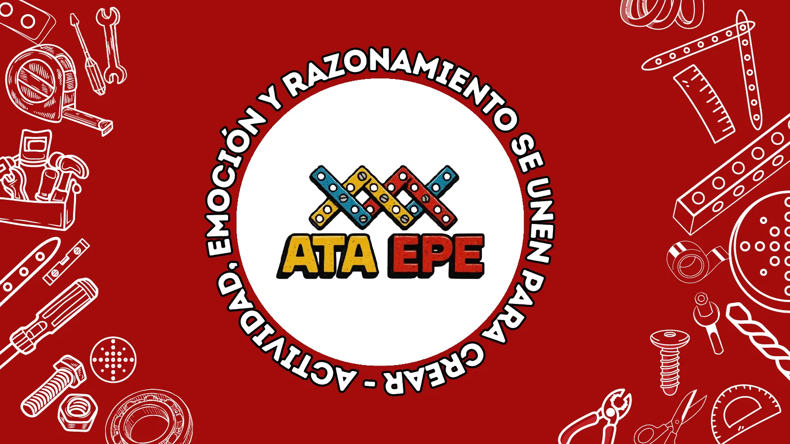

Lanzamiento oficial de la cartilla
Vivencia tecnológicaSistemas mecánicos
Pregunta para hoy
¿Qué es el equilibrio para ti?
La cartilla
La cartilla Sistemas mecánicos es una invitación para dar rienda suelta a nuestra curiosidad, imaginación y deseo de saber; a explorar, preguntarnos, diseñar, inventar, relacionar, explicar y experimentar.
Un mundo de posibilidades para aprender, distinguir variables, comparar y medir, identificar parámetros, diseñar, deconstruir, crear y recrear prototipos que enriquecen nuestro saber y nos hacen protagonistas de nuestras propias invenciones.
- Preguntar
- Diseñar
- Investigar
- Innovar
- Explicar
- Explorar
- Experimentar
- Recrear
Pensar para diseñar,
diseñar para pensar.
- Siete prototipos
- Balanza, pantógrafo, mono acróbata, pescador, dos ruedas, cuenta historias y bailarinas
- Autores
- Rosa Inés Pedreros Martínez, Laura Tatiana Cobos Valbuena, Edwin Alejandro Castelblanco Gracia, Sergio Andrés Sabogal Rincón y Andrés Mayorga Jiménez
- Edita
- Corporación Escuela Pedagógica Experimental · Bogotá, 2026
- ISBN
- 978-958-57808-6-6

Te invitamos al lanzamiento
--días
--horas
--min
--seg
FechaSábado 7 de noviembre de 2026
Hora2:00 p.m. – 5:00 p.m.
LugarCorporación Escuela Pedagógica Experimental
- BienvenidaProyección
- Palabras de aperturaLaura Tatiana Cobos, maestra de ceremonia
- Mesa de trabajoExperiencia ATA Robótica Escolar EPE
- RecesoCompartir
- TallerVivencia con los prototipos de sistemas mecánicos
- Cierre
Un vistazo a la cartilla
Siete prototipos para explorar. Elige uno.